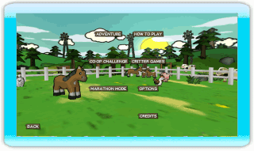

8 |
Main Menu |
 |

Choose which game type to play, or select the Options menu to change the game settings. For multiplayer game types, each player needs his or her own Wii Remote.
Adventure: Travel around the world and put your fence-building skills to the ultimate test. Play by yourself, or with another player, through all 50 levels.
Co-Op Challenges: Play through these multiplayer-designed levels with up to four players. Use your friends to lure that angry bear out of the way!
Marathon Mode: In this 1 to 4-player game type, a nearly-infinite number of random critter encounters await. How far can you make it?
Critter Games: Gather your friends to play these minigames. Up to 4 players can participate!
How To Play: First-time players should take a look at this brief demonstration on how to play Critter Round-Up.
Options: Change your audio settings and take a look at the controls here.
Credits: Check out the names of the people who brought you Critter Round-Up. |
 |
 |
 |